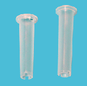

reducer cheminée (Mini ou Maxi)
Cylindre placé dans le fond d'un flacon afin d'éviter l'évaporation du produit et la diminution du volume mort. Pour réactifs moyen volume (STA® -Mini Reducer Cheminée) ou réactifs grand volume (STA® -Maxi Reducer Cheminée).
STA® -Mini Reducer Cheminée et STA® -Maxi Reducer Cheminée
|
 |